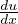
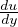

In this project, we made a rasterizer, a software that, given a set of triangle points in a .svg format, can color in those triangles. We also implemented texture mappings that can map textures to different type of transformns in screen space. I thought it was pretty cool that images in graphics were implemented this way, and never knew about the triangles portion of it. I thought it was just all pixels, but there is actually a lot of math and signals processing behind it which is really interesting.
Consider a triangle t living in a continous plane. We can rasterize the triangle in the image plane by doing:
We can consider world coordinates similar to the pixel coordinates. The only difference is that world coordinates are continuous, while pixel coordinates are discrete. Thus, consider discrete pixel coordinates (i,j). To make it more accurate to world coordinates, we consider the center of the pixel, so to convert it to world coordinates, we do (i + 0.5,j + 0.5). We would like to test if this world coordinates is inside the triangle for rasterization, so we proceed with the following test.
A triangle can be represented as three vertices (p1,p2,p3), with line segments
connecting them. To test if a point p is inside a triangle, we need to figure out if the
point p is on one side of the line segment or the other. To do this, we turn toward
geometry.
Let p = (i + 0.5,j + 0.5) be the point we would like to test, and let ptest = p1 -p0 be
the line segment we would like to inspect, with p0 as its origin. First, we determine
the orthogonal vector to ptest, denoted p⊥. Recall the orthogonal line will simply
have a dot product of zero, so p⊥ = (-ytest,xtest) = (-(y1 - y0),x1 - x0).
Now, we can use the orthogonal vector to determine if the point is on one side of the segment or the other. First, we must change the origin of p, so our point vector is p - p0. Next, we can take the dot product with our orthogonal vector and our test vector. This is so we can determine the angle between the orthogonal vector and the test vector, since < u,v >= ||u||2||v||2cosθ. if (p - p0)Tp⊥≥ 0, then the angle θ ∈ [0,π], meaning it is above the line segment. Otherwise, it’s below. For our purposes, if we consider the point to be above all three line segments, then it is inside the triangle. However, it may also be the case that being below the line segment may also be inside the triangle. Thus, one must consider both the clockwise and counterclockwise orientation of the triangle when doing the three line test.

The algorithm is now simple. For every pixel inside the bounding box of the triangle (which is simply the minimum and maximum values of the vertices of the triangle), we test if the pixel in world coordinates is inside the triangle, if it is, we color the pixel the desired color, and otherwise, we leave it alone. As per the specifications, this is no worse than checking each sample within the bounding box of the triangle. The pseudocode is thus simple:
function rasterize(triangle t, color c): for (x, y) in bounding box of triangle: if (x + 0.5, y + 0.5) inside triangle: fill_pixel(x, y, x)
Here is the output for test4.svg. I focus in on the vertiex of the triangle, because that one is the most susceptible to aliasing:

We can see at the vertex that there is clear aliasing, and are many obvious jaggies. This is a sign that we are sampling from a very high frequency at this point, and must sample from a lower frequency to get a less aliased image.
As before, we can see that there is aliasing in the triangles, meaning that the signal is too high frequency to sample from. Thus, to alleviate this, we can do supersampling, a technique that approximates the box filter and allows us to filter out higher level frequencies and collect lower level frequencies. This alleviates some of the jaggies we had earlier.

The idea with supersampling is that you sample more, then with that higher resolution sample, we blur it down to our desired resolution. The higher resolution sample collects higher frequencies, and the blur filters them out, effectively working as a low pass filter. Let K be the number of sample per pixel, and let (i,j) be our desired pixel we would like to color. In this pixel, we will test whether K points are inside the triangle or not, then average it. i.e, for indices (a,b) inside the pixel, we test x = i + ,y = j + is inside the triangle, for all (i,j).


We can see that as we increase the number of samples per pixel, the triangle vertex becomes more and more prominent. This is because we are allowed to take more samples at a high frequency area, thus, prevent aliasing. We can see aliasing occurring with 1 sample per pixel, as this is aliased to be a separated part of the triangle. However, with taking more samples, then averaging, we are able to get a better defined version of the triangle vertex.
Here, I had cubeman do the splits! To do this, I rotated the entire right leg by 90 degrees, and rotated the entire left leg by -90 degrees. This was the result:

For a triangle with vertices A,B,C, and a reference point  , with
, with  , we
can describe the relative positioning of
, we
can describe the relative positioning of  as a convex combination of the
vertices:
as a convex combination of the
vertices:
More intuitively, if we split the triangle into 3 separate triangles, then (α,β,γ) is the relative ratio of the area of these three triangles. One can solve for α,β,γ by solving the following set of linear equations.
In matrix vector form, this is:
This is best described with a colored triangle. As we move (x,y), parts of the triangle, relative to distance, will become more of a different color:

Below is the result of test7.svg using barycentric coordinates.

In pixel sampling, we have two domains, the ”screen space” and the ”texture
space.” These are related to eachother by their corresponding triangles. For
example, if we have triangle (A,B,C) in screen space, then there’s a triangle
(A′,B′,C′) that maps the texture on the texture map. However, these triangles
need not have the exact same coordinates, nor the exact same orientation.
They are simply mappings that relate from screen space to texture space.
Recall that we defined the barycentric coordinates in part 4. We can use the
barycentric coordinates to define the relative positioning of the correspondence
triangle from screen space to texture space. Let (x,y) be a screen space coordinate
inside a triangle, and let (u,v) be its cooresponidng texture space coordinate. With
barycentric coordinates, we can describe (x,y) as:
With said relative positioning, we can describe texture space coordinates as:
Thus, we can sample from screen space, and use that sample to sample from
texture space.
Since our samples are continuous, they do not need to relate exactly to integer
coordinates. Thus, when we sample a (u,v) texture coordinate, we need to map it
back to an actual pixel in texture space.
Nearest neighbor sampling simply gets the nearest pixel coordinate to our sample (u,v). In other words, we just round our pixel coordinate (u * height,v * width) to the nearest integer.
Bilinear sampling takes a more continious approach. Let (u,v) be our texture coordinate, and let u00,u10,u01,u11 be its 4 nearest pixel neighbors. Bilinear sampling, similar to barycentric coordinates, will use a weighted average of the 4 neighbors, weighted by its distance from the neighbor.

As above, let s and t be the distance from relative texture coordinate u00. Then our weighting scheme, and our final color, is:

Below, I run results on both Nearest Neighbor Sampling and Bilinear sampling and compare their results below:
Here, I argue that Bilinear Sampling defeats Nearest Neighbor Sampling. In the
pixel inspector, we can see that many times Nearest Neighbor Sampling will end up
using white pixels, causing very sharp edges and high frequencies. However, for
Bilinear Sampling, we get a much smoother cutoff, as one can see in Figure 1 and
Figure 2.
We can see large differences when sampling at different frequencies. When sampling a
small number of points per pixel, (i.e 1 sample per pixel), this will cause large
differences, since nearest neighbor will end up creating high frequency outputs (i.e 1
to 0 instantly). However, with bilinear sampling, this will create a smoother
cutoff, rather than the sharp cutoff seen in nearest neighbor, which one can
see in figure 1. When sampling at a higher frequency (i.e 16 samples per
pixel), the difference will be less obvious, but still be there. This is because
when supersampling, we will filter out the high frequency signals created by
nearest neighbor, creating a smoother cutoff than before, similar to bilinear
sampling.
Recall that we have a texture map for our texture sampling. However, at different
distances of the image, there can be aliasing due to the high frequency change from
far away. If we simply filter out the high frequencies, this may cause blurring at parts
of the image that are close (i.e low frequency signals). Thus, we use mipmaps, which
is stored resolutions of the texture map. If the texture is far and is of high frequency,
we use a higher level (lower resolution) mipmap, and if it’s closer with lower level
frequencies, we use a lower level (high resolution) mipmap. To determine
the mipmap level, we simply consider the change across neighboring pixels.
To implement this, let (u,v) be the texel we are consdering of sampling. For low
frequency signals, the pixel should not be changing that much, so we want a lower
level, and for higher frequency signals, the pixel should be changing a lot, so we want
a higher level. Let the difference in neighboring pixels be denoted (,) and
(,) (these are not actual derivatives, but simply the difference between the
considered texel (u,v) and it’s right and up neighbors). We thus determine level
as:
Here, L should be clamped to it’s minimum and maximum level of stored
mipmap. A log 2 is used since the resolution of each mipmap is divided by 2, and the
maximum was just here as a design choice.
Many times though, L is a float, which should not be ignored. Thus, it also
makes sense to use a bilinear combination of mipmaps, i.e, get the color
as:
Now, for screen space point (x,y), calculate it’s texel coordinate (u,v) using barycentric coordinates, then similarly get its texel neighbors by doing the same thing with (x + 1,y) and (x,y + 1). Calculate its discrete derivatives, and calculate the clamped mipmap level L, and use that mipmap level to sample the texel.
Pixel Sampling: In pixel sampling, we used two techniques: Nearest Neighbor and
Bilinear sampling, which do have its payoffs. With Nearest Neighbor, we get much
better speed, as this is simply just two rounding operations, which is simpling cutting
off a float. Compared to Bilinear Sampling which has much more floating point
operations, Nearest Neighbor wins in the speed category. However, Bilinear sampling
defeats nearest neighbors when it comes to antialiasing, as we get much smoother
textures, whereas nearest neighbor will generate jagged artifacts. Their memory
usage is almost identical.
Level Sampling: For level sampling, we can either do L = 0, use the nearest L, or
a bilinear combination of L. L = 0 is the simplest approach, having the highest
speed with less FLOPs and less memory accesses, but is susceptiple to the
issue of aliasing at high frequency locations (i.e far away spots). Using the
nearest L is better with aliasing, but has less speed due to more memory
accesses and FLOPs. With bilinear L, this helps with aliasing even more,
but must sample textures twice as much and has more FLOPs, sacrificing
speed even more. The memory usage across all of these is almost identical.
Number of Samples Per Pixel: Increasing the number of samples per pixel will
always help with aliasing, but has huge consequences for speed and memory, as we
must store each of these samples in a sample buffer, as well as sample much
more.
We can see that in level 0 sampling, the whiskers are more prominent than the nearest neighbor. This is even more prominent when we do nearest level. We can see that the whiskers are much more smoother and continuous than the nearest neighbor sampling, due to the high frequencies from nearest neighbor sampling.